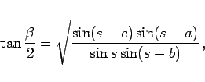
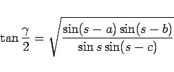
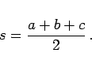
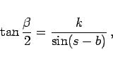
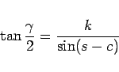
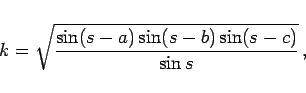

Inhalt Index DeskTop Bronstein

 Geometrie Sphärische Trigonometrie Haupteigenschaften sphärischer Dreiecke Grundformeln und Anwendungen
Geometrie Sphärische Trigonometrie Haupteigenschaften sphärischer Dreiecke Grundformeln und Anwendungen


Zur Berechnung eines Winkels eines sphärischen Dreiecks aus seinen drei Seiten kann der Seiten-Kosinussatz verwendet werden. Der Halbwinkelsatz bietet in Analogie zum Halbwinkelsatz der ebenen Trigonometrie die Möglichkeit, den Winkel aus der numerisch günstigeren Tangensfunktion zu berechnen.
|  | (3.196b) |
|  | (3.196c) |
mit
|  | (3.196d) |
Die Bezeichnungen der Größen entsprechen denen der Abbildung.

Wenn aus drei Seiten eines sphärischen Dreiecks alle drei Winkel zu berechnen sind, kann die folgende Berechnung günstiger sein:
|  | (3.197b) |
|  | (3.197c) |
mit
|  | (3.197d) |